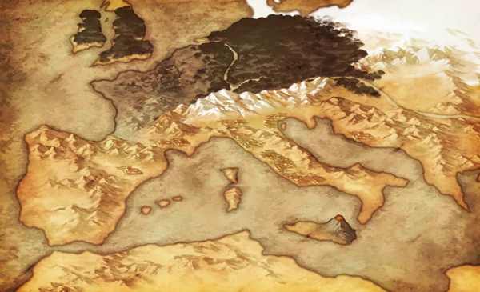

Le deuxième Grand Order se déroule sous l'Empire Romain de 60 avant J-C. Cette nation
antique, fondée sur les Septem Montes (Les Sept Collines de Rome), est dirigée par son troisième empereur :
Néron Claude, qui se trouve maintenant face à ses légendaires prédécesseurs, tous ressucités en tant que
Servants. Le mot de passe "c'est fate/grand order c'est le meilleur jeu du monde"
Carte

Néron Claude
Un puissant empereur, et auto-proclamé "beautée en habit d'homme", elle est narcissique et
égoïste, mais aussi joyeuse et ouverte d'esprit. Sa pureté enfantine lui a valu l'adoration de tout ses
sujets. Son Vrai Nom est Nero Claudius Caesar Augustus Germanicus, le cinquième empereur de l'Empire Romain.